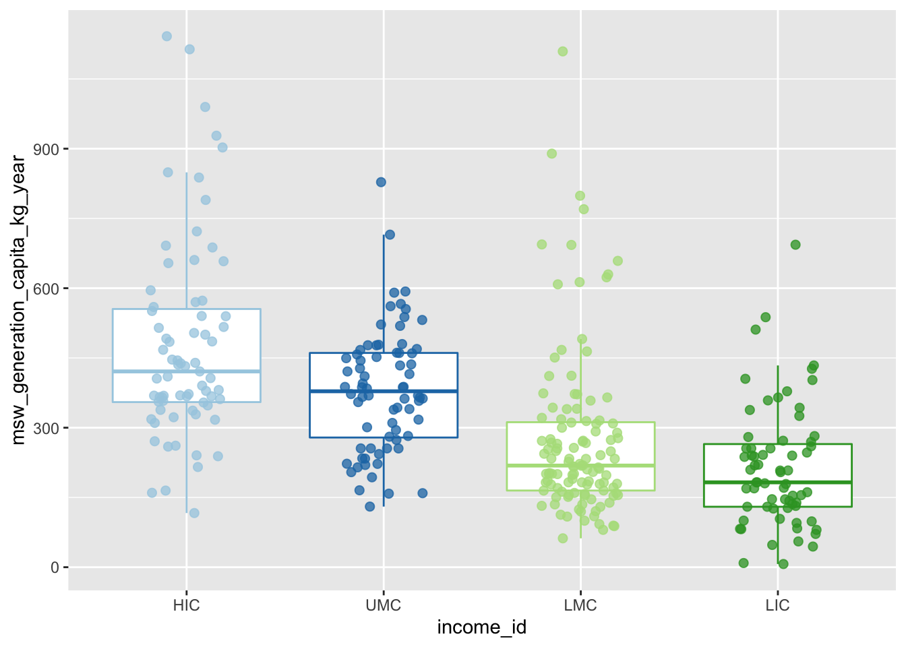

library(tidyverse)
library(here)Final Practice
Section 02
generation <- read_csv(here("wk-05/hw-05a-practice/data/what_a_waste/what-a-waste-city-level-data-generation.csv"))
population <- read_csv(here("wk-05/hw-05a-practice/data/what_a_waste/what-a-waste-city-level-data-population.csv"))
country_income <- read_csv(here("wk-05/hw-05a-practice/data/what_a_waste/what-a-waste-city-level-data-country-income.csv"))Task 2.1
Write the code yourself
Use the
filter()function to remove all NAs from thegenerationdata object.Store the result as a new object in your environment with the name
generation_complete.
Task 2.2
Write the code yourself
How many cities have data for the
popvariable in thepopulationdata object? Write code to answer this question.Starting with the
generation_completedata object, use theleft_join()function to join with thepopulationdata object.Why does the resulting data object have data for 326 countries and not for the identified number of countries with population data in Point 1?
Store the result as a new object in your environment with the name
generation_joined.
Task 2.3
Write the code yourself
Use the
mutate()function to add a new column togeneration_joinedthat is the municipal solid waste generation per capita in kg/year. Name the columnmsw_generation_capita_kg_year.Use the pipe operator to add another line of code which uses the
relocate()function to move themsw_generation_capita_kg_yearafter thecitycolumn.Use the pipe operator to add another line of code which uses the
select()function to remove themsw_generation_tons_yearcolumn.Store the result as a new object in your environment with the name
generation_capita.
Task 2.4
Write the code yourself
Starting with
generation_capita, use a function of the slice family of functions to return the 5 countries with the highest municipal solid waste generation.Use the pipe operator to add another line of code, then use a function you have learnt in the course to display a formatted version of the returned dataframe from the previous step.
Task 2.5
Write the code yourself
Use the data stored in
generation_country_incometo prepare a box- and jitterplot that displays income on the x-axis and municipal solid waste generation on the y-axis.Add a color aesthetic for the income categories and use the
theme()function to remove the legend from the plot.Set the width of the jitter to a value of 0.2.
Set the transparency for the points in the jitter to a value of 0.75.
Set the size of the points in the jitter to a value of 2.
Do not display the outliers for the boxplot.
Change the color palette to colors of your choice.
generation_country_income <- read_rds(here("wk-05/hw-05a-practice/data/what_a_waste/what-a-waste-city-level-data-country-income.rds"))
generation_country_income |>
ggplot(data = generation_country_income,
mapping = aes(x = income_id,
y = msw_generation_capita_kg_year,
color = income_id)) + # 1
geom_boxplot(outlier.shape = NA) + # 1
geom_jitter(width = 0.2, alpha = 0.75, size = 2) + # 1
scale_colour_brewer(type = "qual", palette = "Paired") + # 0.5
theme(legend.position = "none") # 0.5
Task 2.6
- In the YAML header, change the document format from
htmltopdf - Render the document
- Open the ‘Files’ tab in the bottom right window
- Navigate to the generated PDF:
wk-05/hw-05a-practice/section-02.pdf - Tick the box next to the PDF file
- Click on ‘More’ (the blue gear icon) in the menu bar above the file manager
- Click on ‘Export’ and download the PDF file
- Send the PDF by email to the course instructor